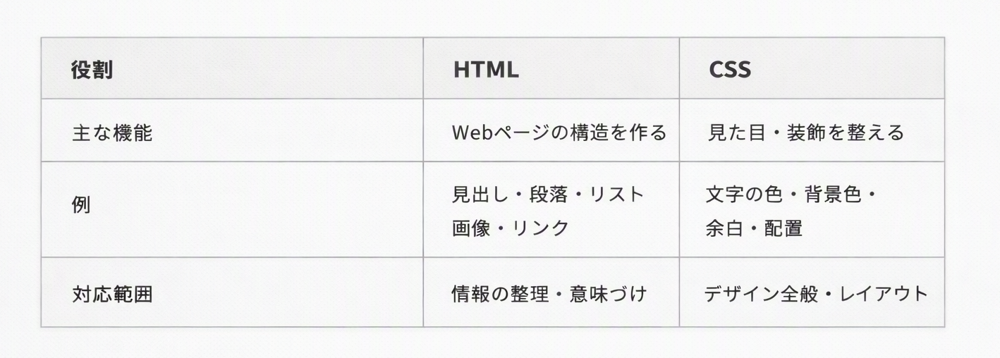
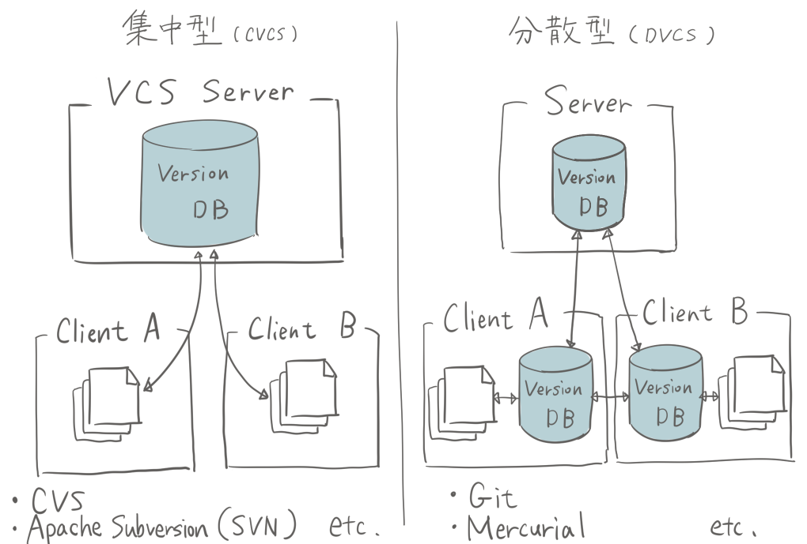

第一回課題
htmlとは
「 HyperText Markup Language」の略でWebページを作成するために開発されたWebプログラミング言語。
Webページの骨組みを作る仕事。文章や画像の配置、リンクの設定など、すべての基礎構造をHTMLで作る。
現在インターネット上で公開されているすべてのWebサイトでHTMLが使われている。
htmlとcssの違い
HTMLとCSSはよくセットで登場しますが、その役割には明確な違いがある

HTMLで構造を作り、CSSで見た目を整えることで、保守性と拡張性の高いWebページになります。
gitとは
gitとは、分散型管理システムのこと。
バージョン管理システムの分類のひとつに、集中型か分散型かがあります。
サーバーがないと機能しません。
分散型はローカルだけでも動作するので、ネットワークに繋がっていない状態でも版管理ができます。

分散型管理システムと呼ばれるgitには下記の特徴があります。
- 新旧のファイルを一元管理できる
- 編集した履歴を複数人で共有できる
- 複数人で修正した部分を一つに統合できる
以上のことより、gitには、複数人で開発を行ったり、デバッグ作業を行うときにミスを減らし効率化できる仕組みがあります。
gitは テキストデータや画像データ、Excelファイルなども管理することができるので、多くのファイルを編集したり、
修正する必要のある事務作業にも活用できるシステムです。
特に編集したファイルを共有できる機能は、
複数人での作業を効率的に管理するのにピッタリです。
リポジトリとは
リポジトリとは、ファイルやディレクトリを入れて保存しておく貯蔵庫のことです。
Gitにおけるリポジトリは以下の2種類に分かれています。
2種類のリポジトリに分けることで、普段の作業はそれぞれのユーザーが手元のローカルリポジトリで行い、
作業内容を共有するときにリモートリポジトリで公開するという使い方ができます。